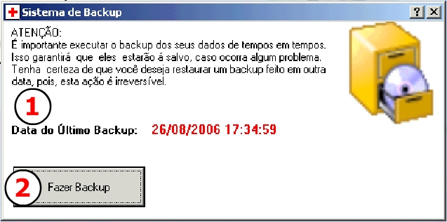

|
|
||||
|
ACESSANDO O SISTEMA DE BACKUP
Para acessar o
sistema de backup guie-se pelo menu ARQUIVO>BACKUP,
clique sobre ele que uma janela contendo a função aparecerá. O QUE É UM BACKUP?
Um BACKUP é basicamente quando você pega todos os
dados que compõe um determinado trabalho, nesse caso as informações cadastradas
no SICEP 1.0, e armazena separadamente em local seguro para eventuais restaurações
do sistema. Por exemplo, se o computador onde você trabalha sofrer algum dano ou
você desejar reaver informações antigas, basta pegar o arquivo gerado pelo backup
e reintroduzi-lo no sistema.
FAZENDO UM BACKUP NO SICEP 1.0
Oriente-se pelos números abaixo para
visualizar as funções
por eles desempenhadas. 
RESTAURANDO MINHAS INFORMAÇÕES
Para restaurar as informações do seu sistema
contate os fornecedor pelo telefone indicado ou endereço.
|
||||
|
|